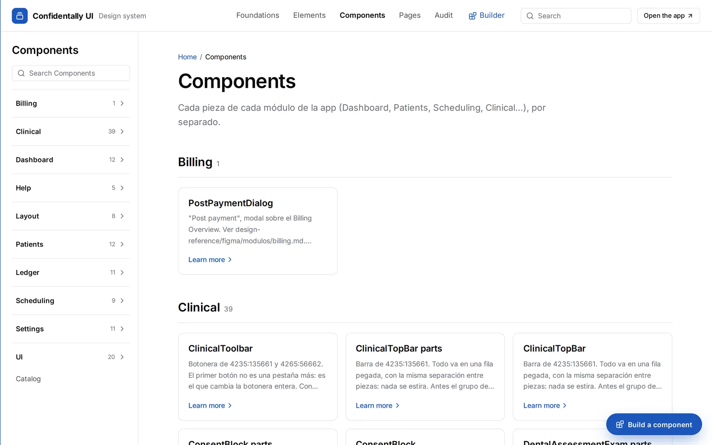
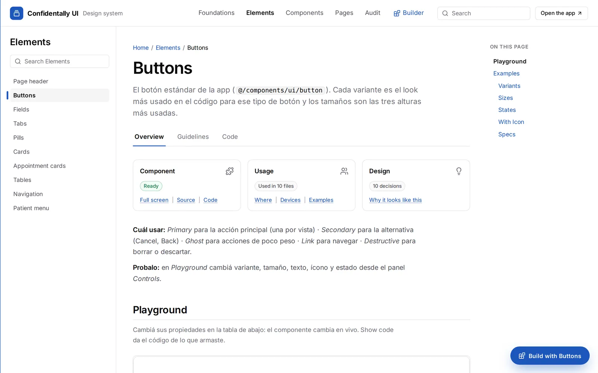
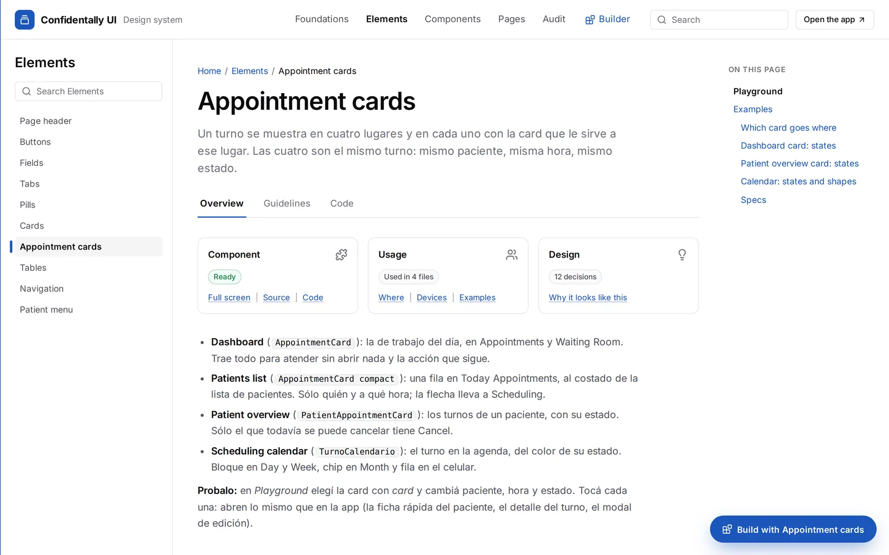
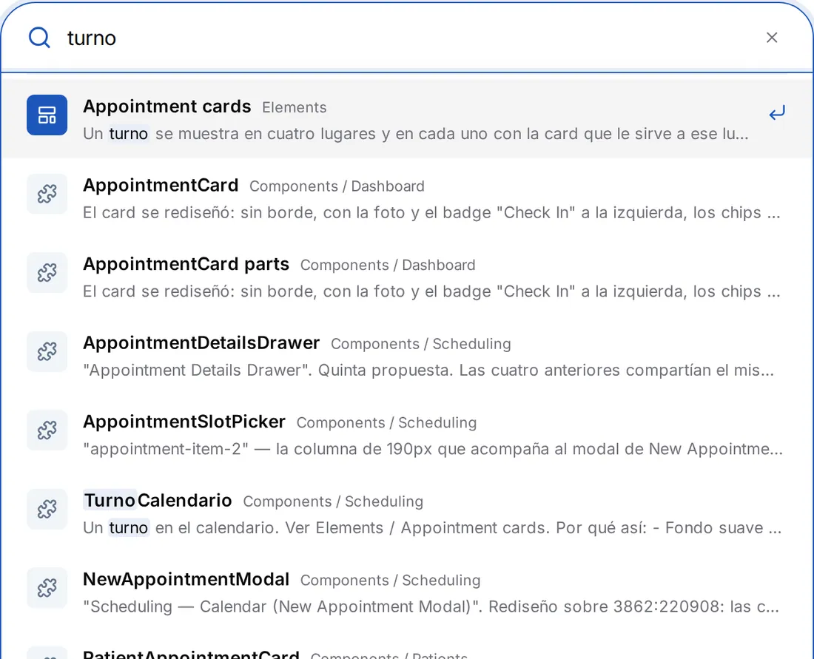
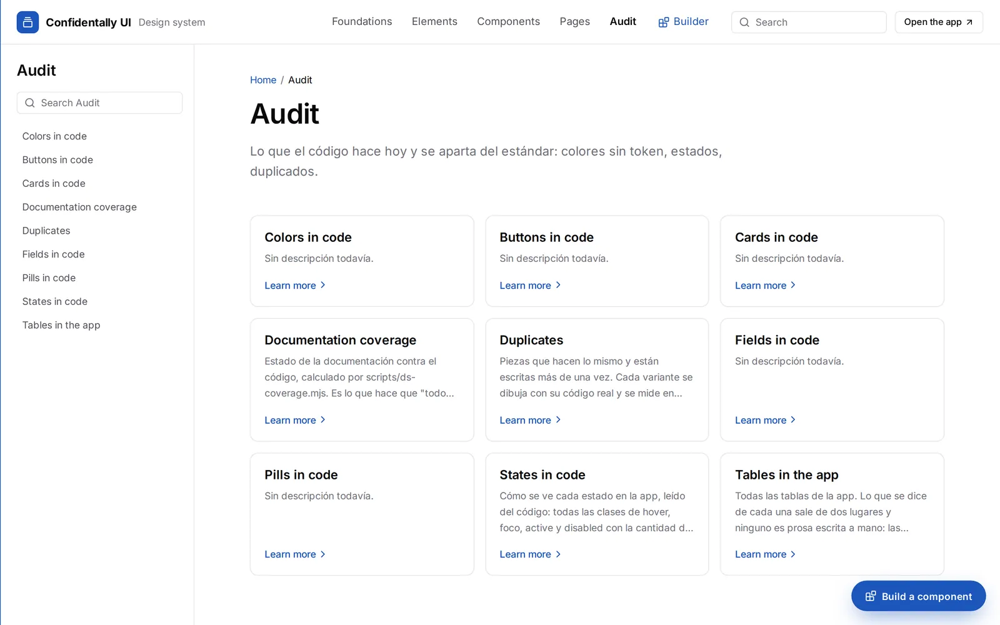
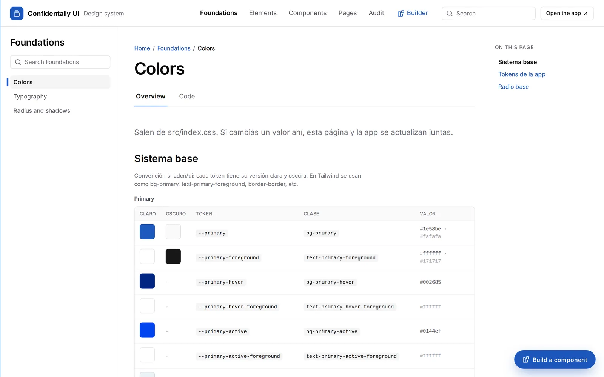

Confidentally UI
A living design system: every button, table and screen of the app, working and explained, plus a Builder that assembles new screens from the real components.
A living design system: every button, table and screen of the app, working and explained, plus a Builder that assembles new screens from the real components.
Most design systems are a copy of the product that someone has to keep in sync. Confidentally UI isn’t. Storybook imports the same components the app uses, the colors page parses the app’s stylesheet, and the Pages section mounts the real routes. When the code changes, the documentation changes with it.
I hid Storybook’s own chrome and designed a documentation site on top: a top bar with six sections, a search, a menu per section and the same page layout for every component.
Screen titles came in at 20, 24 and 36px. The appointment card of the patient overview was written by hand, and the calendar one was repeated three times in the same file. Colors were typed as hex values instead of tokens. Designers and developers needed one answer to the same question: which one do I use?
Colors, typography, radius and shadows, read from the app’s CSS, each token with its light and dark value.
Ten standard pieces: page header, buttons, fields, tabs, pills, cards, appointment cards, tables, navigation and the patient menu.
128 pieces by module: Clinical 39, UI 20, Dashboard 12, Patients 12, Ledger 11, Settings 11, Scheduling 9, Layout 8, Help 5, Billing 1.
Every route of the app, mounted from the same router.
What the code does today that departs from the standard, measured by scripts.
Where the pieces come together into new screens, by hand or described in words.

Every page follows the same order: breadcrumb, name, one sentence, and Overview, Guidelines and Code tabs. Three status cards answer what a team asks first:
Specs are measured from the rendered component, not typed by hand.

Each variant, primary, secondary, ghost, link and destructive, is the look the code already used most for that kind of action. The sizes, 28, 32 and 36px, are the three heights the app used most. Hover, pressed, focus, disabled and loading are solved once, in one component.
The same logic shaped the appointment cards: one appointment appears in four places, and each place gets the card that serves it. Same patient, same time, same status.

The search reads names, descriptions, examples and Spanish synonyms. Typing “turno” finds every appointment component, even though none of them is called that in the code.
Starting points sit under the search box, and a strip of 18 real pieces invites people to explore by clicking.

The Builder assembles screens from the app’s own components on a canvas that starts with the real sidebar and top bar. Layers shows the tree, Code gives the TSX with its imports, PNG exports the design and Share link compresses it into the URL, with nothing uploaded to a server.
Describe goes further: write “a patients screen with metrics, the table and today’s appointments on the right”, and it searches 379 pieces and 33 blocks and builds the screen block by block.


Published next to the app, updated from the code, and shared by design, development and product. The Builder turns it into a tool: a new screen starts from real components instead of a blank frame.